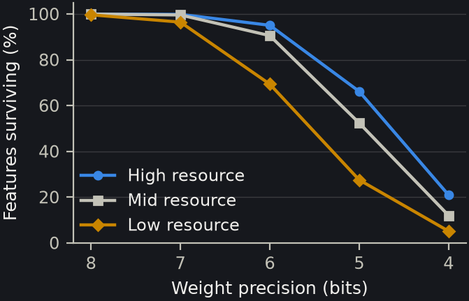
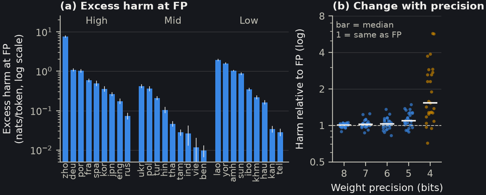
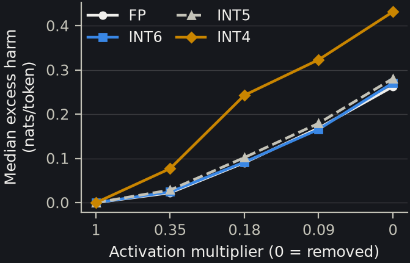
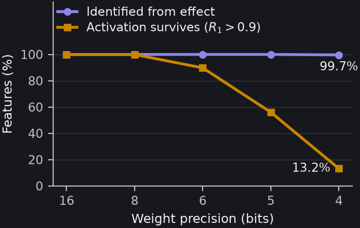
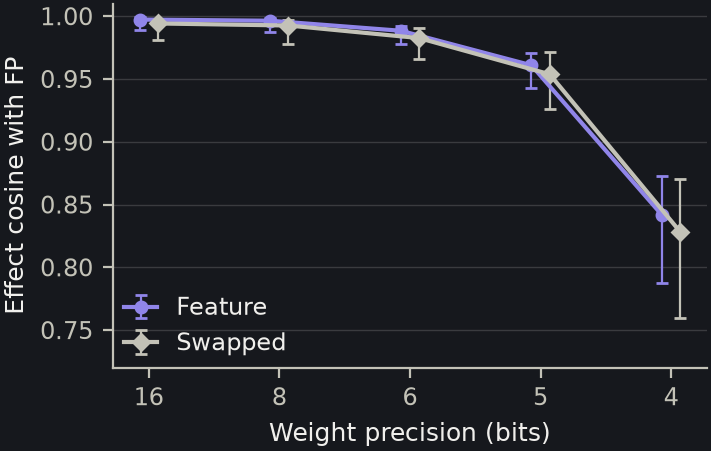
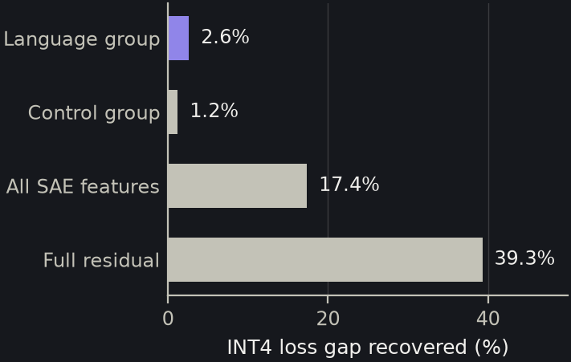
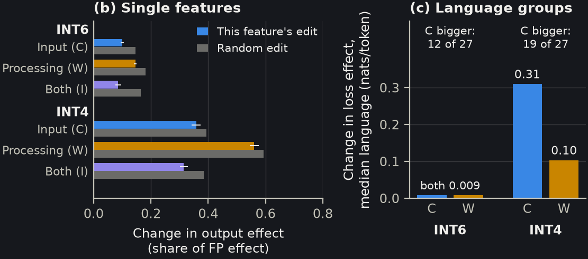
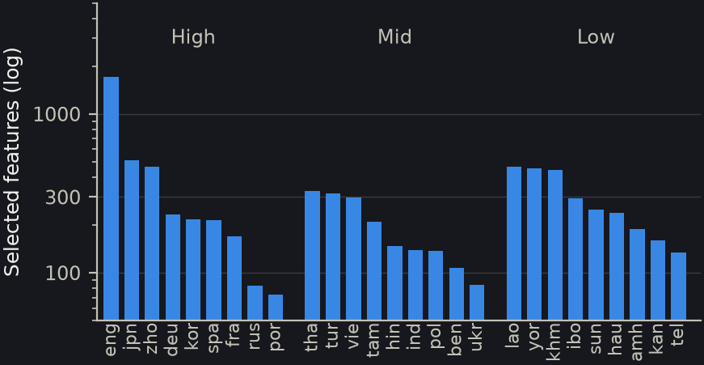

| No BOS | With BOS | |
|---|---|---|
| FP perplexity | 458.4 | 16.1 |
| INT6 survival | 51% | 97.5% |
| INT7 survival | 81% | >99.9% |



| Activation multiplier | Median harm |
|---|---|
| 0.354 | 0.022 |
| 0.177 | 0.090 |
| 0.088 | 0.169 |
| 0 | 0.262 |





| INT4 measurement | Legacy | Matched | GPTQ |
|---|---|---|---|
| Active-feature survival (%) | 12.7 | 18.6 | 30.5 |
| Mean loss increase (nats/tok) | 0.590 | 0.385 | 0.130 |
| Median group-effect ratio | 1.54 | 1.36 | 1.22 |
| Median effect cosine ($W_1$) | 0.839 | 0.875 | 0.923 |
| Transfer cosine | 0.768 | 0.822 | 0.877 |
| Belebele accuracy (%) | 23.6 | 29.1 | 31.8 |